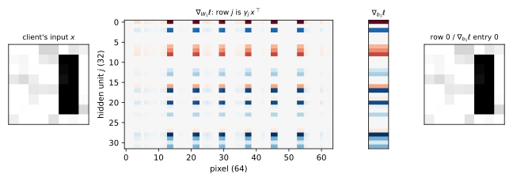
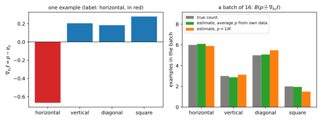
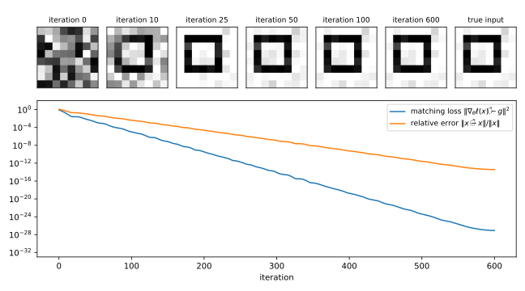
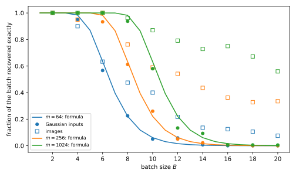

14 Gradient inversion
14.1 Why this matters
A phone keyboard learns from what its users type. The raw text never leaves the phones. Instead, a server sends the current model \(\theta\) to each phone, the phone computes the gradient of the loss on its own few examples, and only that gradient goes back. The server averages the gradients of many phones and takes a step. This is the setting of federated learning (FL), and it is often described as private because “the data stay on the device”. Later parts study FL itself. This chapter asks one question about it: what does a single client’s gradient reveal about the client’s data?
The answer is: often, everything. A gradient is not a summary statistic chosen to hide the data. It is the derivative of a loss with respect to millions of parameters, and many of those derivatives are simple functions of the input. This chapter shows four ways to read the data back out of the gradient, going from the exact to the approximate. The first is exact recovery: for a fully connected layer with a bias, dividing one row of the weight gradient by one entry of the bias gradient gives back the layer’s input, with no search at all. The second is label recovery: the signs of the last layer’s gradient name the label, so the label can be taken off the list of unknowns. The third handles layers where no such closed form exists. You guess an input, compute the gradient it would produce, and move the guess until that gradient matches the one you saw. This is Deep Leakage from Gradients (DLG). The fourth asks what happens when the client sends the average gradient of a whole batch of examples. Averaging mixes the examples together, but much less than you might hope.
14.1.1 The one idea: a gradient is a sum of outer products
Why should a gradient contain the input at all? Take a fully connected layer, which computes \(a = Wx + b\): each output \(a_j\) is a weighted sum of the inputs \(x_k\), with weights \(W_{jk}\), plus a bias \(b_j\). The weight \(W_{jk}\) multiplies the input \(x_k\), so a small change in \(W_{jk}\) changes \(a_j\) by \(x_k\) times that change. The loss \(\ell\) in turn responds to a change in \(a_j\) at some rate, \(\gamma_j = \partial\ell/\partial a_j\), which depends on everything that happens after this layer. The chain rule multiplies the two rates: the loss changes with \(W_{jk}\) at the rate \(\gamma_jx_k\). Collecting these numbers into a matrix with the shape of \(W\), the gradient of the loss with respect to \(W\) is \[\nabla_W\ell = \gamma\,x^\top, \qquad \gamma = \frac{\partial\ell}{\partial a}. \tag{14.1}\] A matrix whose \((j, k)\) entry is \(\gamma_jx_k\) is called the outer product of \(\gamma\) and \(x\). Here it is the outer product of what flows backward (\(\gamma\)) with what flowed forward (\(x\)). Row \(j\) is the input \(x\) multiplied by the single number \(\gamma_j\), so the layer’s input sits, unchanged up to a scale, in every row of the gradient. Every attack in this chapter exploits that. With one example the scale can be divided out. With a batch of \(B\) examples the gradient is a sum of \(B\) such outer products, and the attacker’s job is to pull the sum apart.
Table 14.1 lists the results and where each is used.
| Result | Where it is used |
|---|---|
| \(\nabla_W\ell = \gamma x^\top\), \(\nabla_b\ell = \gamma\) (Toolkit) | Every attack below; per-example gradients in later parts |
| Exact recovery \(x = (\nabla_W\ell)_{j,:}/(\nabla_b\ell)_j\) | Inverting any model whose first layer is fully connected with a bias |
| Labels from the sign of \(\nabla_{b_2}\ell = p - e_y\); counts from its size | Removing the label from the unknowns; label leakage in batches |
| Deep Leakage from Gradients: \(\min_{\hat x}\|\nabla_\theta\ell(\hat x) - g\|^2\) | Inverting layers with no closed form, such as convolutions |
| Rank and isolation in a batch: \(1 - (1 - 2^{-B})^m\) | How much batching protects, and why it is not a defence |
14.1.2 The setting and the game
The server is honest-but-curious in the sense of Threat models and privacy games: it runs the training protocol as specified, sends the real model and does not tamper with anything, and only analyses what it receives. Its access is the transcript, the strongest level of that chapter: it sees each client’s own update, which is more than the final model, and it knows the architecture and every parameter of \(\theta\) because it chose them. A client holds a batch of \(B\) labelled examples \((x_1, y_1), \dots, (x_B, y_B)\). Its training loss is the average of the \(B\) per-example losses, and what it sends is the gradient of that average with respect to all the parameters \(\theta\). Since the derivative of an average is the average of the derivatives, this is the average of the per-example gradients: \[g = \frac1B\sum_{i=1}^B\nabla_\theta\ell(\theta; x_i, y_i). \tag{14.2}\]
This is the reconstruction game of that chapter, played on one client. A game there has three parts: a challenger who draws a hidden secret, an adversary who sees only what the threat model allows, and a score for the adversary’s guess. Here the challenger draws the batch from the population and the secret is the inputs. The adversary sees \((\theta, g)\) and outputs reconstructions \(\hat x_1, \dots, \hat x_B\), and its gain is how close they come to the true inputs. We measure closeness by the relative error \(\|\hat x - x\|/\| x\|\): the length of the mistake as a fraction of the length of the input, so that 0 is a perfect reconstruction and 1 is a mistake as large as the image itself. Each true example is matched to its closest reconstruction, because an average does not change when you reorder the examples, so the gradient carries no record of which example came first.
The baseline is a guess from the population alone, such as the average image of a shape, which knows nothing of the client’s own position, noise or pixels. The attacks below either recover the client’s exact pixels or, for large enough batches, produce blends; there is little in between.
The model. All experiments use a network with one hidden layer, written in NumPy. An input \(x \in \mathbb R^d\) first goes through a fully connected layer (\(W_1\), \(b_1\)) that gives one number \(a_j\) per hidden unit. An activation \(\sigma\) is applied to each unit, giving \(h\). A second fully connected layer (\(W_2\), \(b_2\)) turns \(h\) into one score \(z_k\) per class, called a logit. The softmax turns the logits into probabilities by exponentiating and normalizing, \(p_k = e^{z_k}/\sum_{k'}e^{z_{k'}}\), so that every \(p_k\) is positive and they sum to 1. The loss is the cross-entropy, minus the log of the probability the model gives to the true label \(y\), which is small when the model is confidently right. In one line: \[a = W_1x + b_1, \quad h = \sigma(a), \quad z = W_2h + b_2, \quad p = \mathrm{softmax}(z), \quad \ell = -\ln p_y, \tag{14.3}\] with \(m\) hidden units, \(K\) classes, \(W_1 \in \mathbb R^{m\times d}\) and \(W_2 \in \mathbb R^{K\times m}\). The activation \(\sigma\) is either the ReLU \(\max(a, 0)\), which passes positive values and replaces negative ones by 0, or the sigmoid \(1/(1 + e^{-a})\), which squashes every value smoothly into \((0, 1)\). The inputs are synthetic \(8\times8\) grey-scale images (\(d = 64\)) of \(K = 4\) shapes (a horizontal bar, a vertical bar, a diagonal and a square outline), shifted at random and with pixel noise. The network has \(m = 32\) hidden units and is at its random initialization, as in the first round of training. Counting the \(64\cdot32\) weights and 32 biases of the first layer and the \(32\cdot4\) weights and 4 biases of the second, it has \(64\cdot32 + 32 + 32\cdot4 + 4 = 2{,}212\) parameters, so the gradient has 2,212 entries, against 64 unknown pixels per example.
What this chapter assumes. Gradients, stochastic gradient descent (SGD), minibatches and the limits of non-convex optimization are in Optimization. The threat-model vocabulary and the games are in Threat models and privacy games. The facts this chapter needs from both are restated where they are used. For a different route to reconstruction, from noisy answers to many queries rather than from one gradient, see Reconstruction attacks.
Conventions. \(e_y\) is the \(y\)-th standard basis vector: 1 in position \(y\) and 0 elsewhere, the “one-hot” encoding of the label. \(\odot\) is the elementwise product, which multiplies two vectors entry by entry. For a matrix \(A\), \(A_{j,:}\) is its \(j\)-th row. Gradients are column vectors and \(\nabla_W\ell\) has the shape of \(W\). We write \(\gamma_1 = \partial\ell/\partial a \in \mathbb R^m\) and \(\gamma_2 = \partial\ell/\partial z \in \mathbb R^K\) for the backward signals at the two layers: how fast the loss changes with each hidden unit’s pre-activation and with each logit. Texts on backpropagation usually write these signals as \(\delta\); this book keeps \(\delta\) for the privacy parameter of the later parts.
14.2 Toolkit: three facts every derivation uses
14.2.1 Fact 1 — The gradient of a fully connected layer is an outer product
This is the fact behind the whole chapter: in a fully connected layer, the gradient of each weight is the backward signal of its output times the input it multiplies. Let \(a = Wx + b\) with \(W \in \mathbb R^{m\times d}\), and let \(\gamma = \partial\ell/\partial a\) be the backward signal. Then \[\nabla_W\ell = \gamma\,x^\top, \qquad \nabla_b\ell = \gamma. \tag{14.4}\]
Why. Write out one output: \(a_j = \sum_kW_{jk}x_k + b_j\). The weight \(W_{jk}\) appears in \(a_j\) only, with coefficient \(x_k\), so \(\partial a_j/\partial W_{jk} = x_k\). The loss depends on \(W_{jk}\) only through \(a_j\), so the chain rule gives \(\frac{\partial\ell}{\partial W_{jk}} = \frac{\partial\ell}{\partial a_j}\frac{\partial a_j}{\partial W_{jk}} = \gamma_jx_k\), which is the \((j, k)\) entry of \(\gamma x^\top\). The bias \(b_j\) enters \(a_j\) with coefficient 1, so \(\frac{\partial\ell}{\partial b_j} = \gamma_j\cdot1\).
A concrete case. With \(m = 2\), \(d = 3\), \(\gamma = (-0.3279, 0.9838)\) and \(x = (0.5, 1, 0.2)\), the two rows of \(\nabla_W\ell\) are \(-0.3279\,x = (-0.1640, -0.3279, -0.0656)\) and \(0.9838\,x = (0.4919, 0.9838, 0.1968)\). Both are multiples of \(x\). This is the worked example of Table 14.2.
Every attack in this chapter uses this fact. The point to keep is the split between the two factors: \(\gamma\) depends on everything above the layer (the rest of the network, the loss, the label), but the factor \(x^\top\) does not. Whatever the rest of the network does, it can only rescale the rows, never change their direction.
14.2.2 Fact 2 — Softmax with cross-entropy has gradient \(p - e_y\)
At the last layer the backward signal has a very simple form: the predicted probabilities minus the one-hot label. In words, raising the logit of a wrong class \(k\) raises the loss at the rate \(p_k\), the probability the model already gives that class, and raising the logit of the true class lowers the loss at the rate \(1 - p_y\). With \(p = \mathrm{softmax}(z)\) and \(\ell = -\ln p_y\), \[\gamma_2 = \frac{\partial\ell}{\partial z} = p - e_y. \tag{14.5}\]
Why. Write the loss without the fraction. Since \(p_y = e^{z_y}/\sum_ke^{z_k}\), its log is \(z_y - \ln\sum_ke^{z_k}\), so \(\ell = -z_y + \ln\sum_ke^{z_k}\). Now differentiate in one logit \(z_k\). The first term depends only on \(z_y\), so it contributes \(-1\) when \(k = y\) and 0 otherwise, which is \(-\mathbf 1[k = y]\). The second term is the log of a sum, and the derivative of \(\ln u\) is \(u'/u\): here \(u' = e^{z_k}\), so the term contributes \(e^{z_k}/\sum_{k'}e^{z_{k'}} = p_k\). Together, \(\partial\ell/\partial z_k = p_k - \mathbf 1[k = y]\), which is entry \(k\) of \(p - e_y\).
A concrete case. With logits \(z = (-0.35, 0.295)\) and \(y = 1\) (the first class), the first probability is \(p_1 = e^{-0.35}/(e^{-0.35} + e^{0.295}) = 1/(1 + e^{0.645}) = 1/(1 + 1.906) = 0.3441\), so \(p = (0.3441, 0.6559)\) and \(\gamma_2 = (0.3441 - 1, 0.6559) = (-0.6559, 0.6559)\). The entries sum to 0, and only the true class is negative.
This sign pattern is what label recovery uses. The softmax never gives a probability of exactly 0 or 1, since every \(e^{z_k}\) is positive, so \(0 < p_y < 1\). The entry at the true label is therefore \(p_y - 1 < 0\), and every other entry is \(p_k > 0\).
14.2.3 Fact 3 — Backpropagation and averaging
To use Fact 1 at the first layer you need its backward signal \(\gamma_1\), and that is obtained by sending \(\gamma_2\) back through the network, which is what backpropagation does. Each hidden unit \(j\) feeds every logit \(z_k\) through the weight \(W_{2,kj}\), so it collects the logits’ signals weighted by those connections, \(\sum_k\gamma_{2,k}W_{2,kj}\). That sum is how fast the loss changes with the unit’s output \(h_j\). The unit’s output is \(h_j = \sigma(a_j)\), so to get the rate with respect to \(a_j\) you multiply by the activation’s slope \(\sigma'(a_j)\). In vector form: \[\gamma_1 = (W_2^\top\gamma_2)\odot\sigma'(a). \tag{14.6}\] The second half of the fact concerns batches: the gradient of an average loss over a batch is the average of the per-example gradients.
Why. \(z_k = \sum_jW_{2,kj}h_j + b_{2,k}\), so \(h_j\) enters each \(z_k\) with coefficient \(W_{2,kj}\), and the chain rule sums over the logits: \(\frac{\partial\ell}{\partial h_j} = \sum_k\gamma_{2,k}W_{2,kj} = (W_2^\top\gamma_2)_j\). Then \(h_j = \sigma(a_j)\) multiplies this by \(\sigma'(a_j)\). The claim about batches holds because differentiation is linear: the derivative of a sum is the sum of the derivatives, and a constant factor \(\frac1B\) comes out unchanged.
A concrete case. For ReLU the slope is \(\sigma'(a_j) = \mathbf 1[a_j > 0]\): 1 if the unit is switched on, 0 if it is switched off. So a unit that is switched off on an input has \(\gamma_{1,j} = 0\) and, by Fact 1, a zero row in \(\nabla_{W_1}\ell\). For a batch, Fact 1 applied to each example and then averaged gives the first-layer gradient \(\frac1B\sum_i\gamma_{1,i}x_i^\top\): a sum of \(B\) outer products, one per example.
Label recovery uses this fact to know which rows of the weight gradient can be negative, and every batch result below uses the averaging.
14.3 Exact recovery from a fully connected layer
14.3.1 Context
The server sees \(g\). Is there any computation, short of a search, that gives back the client’s input? For the most common first layer of all, a fully connected layer with a bias, there is: one division. The observation goes back at least to Phong et al. (2018), who pointed it out for exactly this federated setting.
14.3.2 Statement
Suppose the client sends the gradient of a single example, and the first layer is fully connected, \(a = W_1x + b_1\). By Fact 1, row \(j\) of the weight gradient is the input \(x\) scaled by the number \(\gamma_{1,j}\), and entry \(j\) of the bias gradient is that same number \(\gamma_{1,j}\). Dividing the first by the second removes the scale. So for every unit \(j\) with \((\nabla_{b_1}\ell)_j \ne 0\), \[x = \frac{(\nabla_{W_1}\ell)_{j,:}}{(\nabla_{b_1}\ell)_j}. \tag{14.7}\] Moreover, since every row is a multiple of the same vector, \(\nabla_{W_1}\ell\) has rank one (all its rows lie on a single line), and that line, its row space, is the line through \(x\).
14.3.3 Derivation
- Apply Fact 1 (Equation 14.4) to the first layer. It gives the two pieces the server sees: \((\nabla_{W_1}\ell)_{j,:} = \gamma_{1,j}\,x^\top\) and \((\nabla_{b_1}\ell)_j = \gamma_{1,j}\).
- Divide one by the other. When \(\gamma_{1,j} \ne 0\), the ratio is \(\gamma_{1,j}x^\top/\gamma_{1,j} = x^\top\). Nothing about the rest of the network enters: the depth, the activations above, the loss and the label all sit inside the number \(\gamma_{1,j}\), and that number cancels.
- Read off the rank. All rows of \(\nabla_{W_1}\ell = \gamma_1x^\top\) are multiples of the same vector \(x^\top\). A matrix whose rows are all multiples of one nonzero vector has rank one, so (as long as \(\gamma_1 \ne 0\)) the rank is one and the row space is spanned by \(x\).
14.3.4 Interpretation
The attack is exact and costs nothing. It needs no optimization, no prior knowledge of what the data look like, and no knowledge of the label. It also checks itself: every unit with a nonzero bias gradient gives the same answer, so if all the usable ratios agree, the attacker knows it has the input.
The same division works at any fully connected layer whose input you want. Applied deeper in the network, it gives that layer’s input, an intermediate feature vector. Applied at the first layer, the input is the data itself.
Three things can stop it, and only one of them stops it fully. With ReLU, units that are switched off on \(x\) have \(\gamma_{1,j} = 0\) and give nothing, but a single active unit is enough. Without a bias there is no denominator, but the rank-one structure still gives the direction of \(x\), so \(x\) is known up to one scalar, and a one-dimensional search finds that scalar (Exercise 2). A convolutional first layer is what really breaks the outer-product form. A convolution applies the same small filter at every position of the image, so its gradient is a sum of outer products over all the image patches rather than a single one, and no division separates them. That is why images fed to convolutional networks need the search of Section 14.5. A batch of more than one example also breaks the formula, as Section 14.6 shows, but only partly.
Figure 14.1 shows the attack on one image.

14.3.5 Example: a network you can compute by hand
Take \(d = 3\) inputs, \(m = 2\) ReLU units and \(K = 2\) classes, with \[W_1 = \begin{pmatrix}0.4 & -0.2 & 0.1\\ 0.3 & 0.5 & -0.4\end{pmatrix},\quad b_1 = \begin{pmatrix}0.1\\ -0.1\end{pmatrix},\quad W_2 = \begin{pmatrix}1 & -1\\ 0.5 & 0.5\end{pmatrix},\quad b_2 = 0, \tag{14.8}\] and the example \(x = (0.5, 1, 0.2)\) with label \(y = 1\) (the first class). Table 14.2 walks through the forward pass, the backward pass and the attack.
| Step | Quantity | Value |
|---|---|---|
| Forward | \(a = W_1x + b_1\) | \((0.2 - 0.2 + 0.02 + 0.1,\ 0.15 + 0.5 - 0.08 - 0.1) = (0.12, 0.47)\) |
| \(h = \max(a, 0)\) | \((0.12, 0.47)\), both units on | |
| \(z = W_2h\) | \((0.12 - 0.47,\ 0.06 + 0.235) = (-0.35, 0.295)\) | |
| \(p = \mathrm{softmax}(z)\) | \((0.3441, 0.6559)\) | |
| Backward | \(\gamma_2 = p - e_y\) (Fact 2) | \((-0.6559, 0.6559)\) |
| \(\gamma_1 = (W_2^\top\gamma_2)\odot\sigma'(a)\) (Fact 3) | \((-0.6559 + 0.5\cdot0.6559,\ 0.6559 + 0.5\cdot0.6559) = (-0.3279, 0.9838)\) | |
| Gradient | \(\nabla_{W_1}\ell = \gamma_1x^\top\) (Fact 1) | rows \((-0.1640, -0.3279, -0.0656)\) and \((0.4919, 0.9838, 0.1968)\) |
| \(\nabla_{b_1}\ell = \gamma_1\) | \((-0.3279, 0.9838)\) | |
| Attack | row 1 / \((-0.3279)\), row 2 / \(0.9838\) | \((0.5, 1, 0.2)\) and \((0.5, 1, 0.2)\) |
The server never sees \(a\), \(h\), \(z\) or \(p\). From the two gradient rows alone it divides and reads off \(x\), twice. Both units are on here (\(a = (0.12, 0.47)\) is positive in both entries), so the ReLU slope is 1 for both and \(\gamma_1\) is just \(W_2^\top\gamma_2\).
On the images. For one \(8\times8\) image and the 32-unit ReLU network, 13 of the 32 units are switched on and have a nonzero bias gradient. Every one of the 13 ratios equals the image to a relative error of at most \(6.7\times10^{-17}\), which is rounding error. To check the rank, look at the singular values of \(\nabla_{W_1}\ell\): they measure how much of the matrix lies along each of its independent directions, so a rank-one matrix has exactly one that is not zero. Here they are \(1.6155\) and then nothing: the second is \(9.5\times10^{-17}\) times the first. The gradient is rank one, as the statement says.
14.3.6 Check yourself
- The network has 20 layers above the first one and a custom loss. Does Equation 14.7 still hold? (Yes. Everything above the first layer only changes \(\gamma_1\), and \(\gamma_{1,j}\) cancels in the ratio. All that matters is that the first layer is fully connected with a bias.)
- For a ReLU network, which units are useless to the attacker, and could all of them be useless? (Units switched off on \(x\) have \(\gamma_{1,j} = 0\). All units are useless only if every unit is off or every active unit has \((W_2^\top\gamma_2)_j = 0\), which for a random network essentially never happens; the image above had 13 usable units out of 32.)
14.4 Label recovery from the last layer
14.4.1 Context
The gradient depends on the label too, and the label is often the most sensitive part: the diagnosis, the word typed next, the class of a photo. Zhao, Mopuri & Bilen (2020) noticed that the label can be read off the last layer in closed form. Their attack, iDLG (“improved DLG”), then searches only for the input, which makes the search of Section 14.5 easier and more reliable.
14.4.2 Statement
There are three versions of the rule, depending on what the last layer has and how many examples the gradient covers. All three come from Fact 2: the last layer’s backward signal is \(p - e_y\), a vector of probabilities with 1 subtracted at the true label.
From the bias, for one example. By Fact 1 the last layer’s bias gradient equals its backward signal, \(\nabla_{b_2}\ell = p - e_y\). Every entry is a positive probability except the one at the true label, where subtracting 1 makes it negative. So the label is the position of the smallest entry, the only negative one: \[y = \arg\min_k(\nabla_{b_2}\ell)_k. \tag{14.9}\]
From the weights, for one example. The weight gradient tells the same story. By Fact 1, row \(k\) of \(\nabla_{W_2}\ell\) is \(\gamma_{2,k}\) times the hidden activations \(h\). If those activations are never negative (\(h \ge 0\) and \(h \ne 0\), as for ReLU or the sigmoid), multiplying by them keeps the sign of \(\gamma_{2,k}\). So \(y\) is the only row of \(\nabla_{W_2}\ell\) whose entries are non-positive, and in particular the only row with a negative sum.
Counts, for a batch. With \(B\) examples the bias gradient is the average of \(p_i - e_{y_i}\) over the batch. The \(e_{y_i}\) parts add up to the label histogram: their \(k\)-th entries sum to \(n_k\), the number of examples of class \(k\). The \(p_i\) parts add up to the model’s total predicted probability for class \(k\), \(\sum_ip_{ik}\). So the histogram is that total minus \(B\) times the bias gradient: \[n_k = \sum_{i=1}^Bp_{ik} - B\,(\nabla_{b_2}\ell)_k. \tag{14.10}\] An attacker who does not know \(\sum_ip_{ik}\) replaces it by \(B\bar p_k\), where \(\bar p\) is a guess of the model’s average prediction, and rounds to the nearest integer.
14.4.3 Derivation
- Bias. Fact 1 at the last layer gives \(\nabla_{b_2}\ell = \gamma_2\), and Fact 2 (Equation 14.5) gives \(\gamma_2 = p - e_y\). Softmax probabilities lie strictly between 0 and 1, so \((\nabla_{b_2}\ell)_y = p_y - 1 < 0\) and \((\nabla_{b_2}\ell)_k = p_k > 0\) for \(k \ne y\). The smallest entry is therefore at \(y\).
- Weights. Fact 1 gives \((\nabla_{W_2}\ell)_{k,:} = \gamma_{2,k}\,h^\top\). With \(h \ge 0\), row \(y\) is \((p_y - 1)h^\top\), a negative number times non-negative entries, so it is \(\le 0\) entrywise. Every other row is \(p_kh^\top \ge 0\). Summing a row multiplies \(\gamma_{2,k}\) by \(\sum_jh_j\), which is positive because \(h \ge 0\) and \(h \ne 0\), so the sum keeps the sign of \(\gamma_{2,k}\).
- Counts. By Fact 3 the batch gradient is the average of the per-example ones, so \(\nabla_{b_2}\ell = \frac1B\sum_i(p_i - e_{y_i})\). Its \(k\)-th entry is \(\frac1B\big(\sum_ip_{ik} - n_k\big)\), because \(e_{y_i}\) has a 1 in position \(k\) exactly when example \(i\) has class \(k\), so \(\sum_ie_{y_i}\) counts the examples of each class. Multiply by \(B\) and solve for \(n_k\).
14.4.4 Interpretation
For one example the rule makes no errors. It is exact for every network that ends in softmax and cross-entropy with a bias, at any point of training, because the sign argument never depends on how good the model is. On 1,000 random images and random networks, both the bias rule and the weight rule name the label correctly 1.000 of the time.
For a batch, the gradient leaks the label histogram. Equation 14.10 is exact, so the only uncertainty is the total prediction \(\sum_ip_{ik}\), and the attacker can estimate it well: it knows the model, so it can run the model on data of its own from the same population and average the predictions. The true counts are integers, and a number within \(\frac12\) of an integer rounds to that integer. So rounding gives the exact counts whenever the estimate of \(\sum_ip_{ik}\) is off by less than \(\frac12\) for every class (Exercise 4). The cruder guess \(\bar p_k = 1/K\), which assumes the model spreads its predictions evenly over the classes, does worse, because even an untrained network is not uniform.
The label matters for inversion as well. Knowing \(y\) removes a discrete unknown from the search. Zhu et al. (2019) optimized a soft label (a probability vector standing in for the unknown label) jointly with the input, and that joint search often failed. With the label fixed by Equation 14.9, the search is over the input only.
Figure 14.2 shows both cases.

14.4.5 Example: a batch of 16
A batch of 16 images has true counts \((4, 2, 4, 6)\) over the four shapes. Table 14.3 reads them off the bias gradient of the 32-unit ReLU network, with three different guesses for the total prediction \(\sum_ip_{ik}\) in Equation 14.10.
| Guess of \(\sum_ip_{ik}\) | Estimated counts | Rounded | All correct? |
|---|---|---|---|
| Exact, \(\sum_ip_{ik}\) (not available to the attacker) | \((4.00, 2.00, 4.00, 6.00)\) | \((4, 2, 4, 6)\) | yes |
| \(B\bar p\), \(\bar p\) averaged over 200 of the attacker’s own images | \((3.88, 2.00, 4.19, 5.92)\) | \((4, 2, 4, 6)\) | yes |
| \(B/K = 4\) for every class | \((2.12, 3.01, 4.27, 6.60)\) | \((2, 3, 4, 7)\) | no |
With the averaged guess every estimate is within \(\frac12\) of the truth (the largest miss is \(4.19 - 4 = 0.19\)), so rounding fixes it. With the uniform guess the first class is off by \(4 - 2.12 = 1.88\), and rounding cannot help.
Over 200 random batches and networks, the rounded counts are all correct in 1.000 of batches of 4, 0.975 of batches of 16 and 0.525 of batches of 64 with the averaged guess. With the uniform guess the rates are 0.925, 0.095 and 0.000. The reason for the decline is that the error of the estimate is a sum of \(B\) deviations, one per example, each the gap between that example’s prediction and the guess \(\bar p\). These do not cancel exactly, so the error of their sum grows with \(B\), and so does the chance that some class is off by more than \(\frac12\). Even when the counts are not all exact, they are close: Exercise 4 finds that at \(B = 16\) the largest error over the four classes, before rounding, has median 0.233 with the averaged guess and 1.102 with the uniform one.
14.4.6 Check yourself
- Why must \(p_y - 1\) be negative, even for a model that is confidently right? (Softmax never outputs exactly 1, so \(p_y < 1\). A confident model gives a tiny negative entry, but its sign is still the only negative one. In floating point a \(p_y\) that rounds to 1 would hide it, which is one reason attacks are run on early-training models.)
- The last layer has no bias and the hidden layer uses tanh. Which rule still works? (Neither as stated: there is no bias gradient, and tanh activations can be negative, so row \(y\) need not have a negative sum. But row \(y\) still has the opposite sign to all other rows, so for \(K \ge 3\) the odd one out is the label; see Exercise 3.)
14.5 Deep Leakage from Gradients
14.5.1 Context
The closed forms need a fully connected layer with a bias. Most image models start with convolutions, and many architectures have normalization layers, attention, or no biases at all. Zhu, Liu & Han (2019) gave a generic attack that needs none of these: guess an input, compute its gradient, and move the guess until the gradients match. If only the true input produces the observed gradient, a matching guess is the input.
14.5.2 Statement
To turn “move the guess until the gradients match” into something you can optimize, you need one number that says how badly a guess matches. DLG uses the squared distance between the gradient the guessed batch would produce and the observed gradient \(g\), summed over all the gradient’s entries. Call it the matching loss \(R\). It is zero for a perfect match and positive otherwise. Given \(\theta\), the observed gradient \(g\) and the labels \(y_1, \dots, y_B\) (from Section 14.4), DLG looks for the guesses \(x'_1, \dots, x'_B\) that make \(R\) smallest: \[\hat x_1, \dots, \hat x_B = \arg\min_{x_1', \dots, x_B'}R(x'), \qquad R(x') = \Big\|\frac1B\sum_{i=1}^B\nabla_\theta\ell(\theta; x_i', y_i) - g\Big\|^2, \tag{14.11}\] where \(\arg\min\) means “the inputs at which the minimum is reached”. It searches by a gradient method: start from random noise and repeatedly move the guess a little downhill on \(R\). The true batch has \(R = 0\), the smallest possible value.
14.5.3 Derivation
- The true batch is a global minimizer of Equation 14.11. \(R\) is a squared length, so \(R \ge 0\) always. Plugging in the true \(x_i\) reproduces \(g\) exactly, so \(R = 0\) there, and nothing can do better.
- The objective can be differentiated in \(x'\) if the network is twice differentiable. A gradient method needs the slope of \(R\) with respect to the guess. Write \(G(x') = \frac1B\sum_i\nabla_\theta\ell(\theta; x_i', y_i)\), the function that takes a guessed batch to the gradient it would produce. Then \(R = \| G(x') - g\|^2\). The squared length \(\| u\|^2\) changes at the rate \(2u\), and the chain rule passes this back to \(x'\) through the Jacobian \(J_G\) of \(G\), the matrix of rates at which each gradient entry changes with each input pixel: \[\nabla_{x'}R = 2\,J_G(x')^\top\big(G(x') - g\big). \tag{14.12}\] \(G\) is already made of first derivatives of the network, so \(J_G\) is made of second derivatives. That is why Zhu et al. replaced ReLU by the sigmoid, and the experiments here do the same. The ReLU’s slope is 0 or 1, constant on each side of zero, so its second derivative is zero almost everywhere: the factor \(\sigma'(a)\) in Equation 14.6 is piecewise constant in \(a\), and the search gets no signal through it. The sigmoid’s slope varies smoothly, so it does.
- Computing \(J_G^\top v\) without forming \(J_G\). \(J_G\) would have one row per parameter and one column per pixel, and no one builds it. Automatic-differentiation libraries instead run backpropagation through the backward pass itself, which is called double backpropagation. The script writes it out by hand for the one-hidden-layer network. The forward pass computes \(a, h, z, p\). The backward pass computes \(\gamma_2, \gamma_1\) and the four gradient blocks. A second backward pass then sends \(2(G - g)\) through every one of those steps back to \(x'\). To check it, the script also estimates the slope by finite differences (nudge one pixel slightly and see how much \(R\) changes), and the two agree to within \(1.2\times10^{-10}\).
- Optimization finds a stationary point, not necessarily the minimizer. \(R\) is not convex in \(x'\): its surface can have dips and flat regions other than the true minimum. As the non-convex section of Optimization shows, for such a function a gradient method with a suitable step only guarantees that the slope \(\|\nabla R\|\) goes to zero. That gives a stationary point, where the surface is flat, which may or may not be the global minimum. So success is an empirical question. The value of \(R\) at the end tells you which case you are in: \(R = 0\) (up to rounding) means you found an exact match, while a value stuck well above zero means you got stuck.
- Uniqueness is plausible when equations outnumber unknowns. Matching \(g\) imposes one equation per parameter: 2,212 here, against \(64B\) unknown pixels. That is not a proof that the minimizer is unique, but with a single example the closed form of Section 14.3 shows that it is: the input is determined by the gradient.
14.5.4 Interpretation
DLG is a general recipe. All it needs is the ability to differentiate the gradient with respect to the input, which any automatic-differentiation library provides. So it works for convolutional networks and on real images, where no closed form exists: Zhu et al. recover CIFAR-100 pictures and text tokens from single-example gradients.
When it fails, it fails first as an optimization, not for lack of information. If the run ends with \(R\) far from zero, the attacker knows it has not found the input, and better optimizers, restarts from new random guesses, and image priors help. Geiping et al. (2020) made two changes. They replaced the squared distance by a cosine distance between gradients, which compares only the directions of the two gradients and ignores their lengths. And they added a total-variation penalty, the sum of differences between neighbouring pixels, which is small for natural images made of smooth regions. (This penalty is a measure of image roughness, not the total variation distance between distributions.) With these they recover recognizable images from trained networks and from batches.
Note what the attack does not need. The label search is gone, thanks to iDLG. And the server need not be malicious: it only computes on what it legitimately received.
Figure 14.3 shows one run.

14.5.5 Example: one image
The script starts from uniform noise and runs 600 steps of the Adam optimizer, a variant of gradient descent that scales each pixel’s step by a running estimate of the size of that pixel’s gradient, with learning rate 0.05 decaying linearly to 0. The label comes from Equation 14.9.
| Iteration | 0 | 10 | 50 | 100 | 200 | 400 | 600 |
|---|---|---|---|---|---|---|---|
| Relative error | \(1.6\) | \(0.67\) | \(7.5\times10^{-2}\) | \(5.7\times10^{-3}\) | \(3.4\times10^{-5}\) | \(7.8\times10^{-10}\) | \(5.8\times10^{-14}\) |
| Matching loss \(R\) | \(1.3\) | \(0.20\) | \(2.5\times10^{-3}\) | \(1.3\times10^{-5}\) | \(4.6\times10^{-10}\) | \(2.5\times10^{-19}\) | \(1.3\times10^{-27}\) |
By iteration 50 the image is visually correct (7.5% error); by iteration 600 it is exact to about 13 digits. The matching loss falls about as the square of the error, and that is what you should expect close to the answer. Near the true input \(x\), the gradient map \(G\) is nearly linear, so the mismatch is about the Jacobian times the error, \(G(x') - g \approx J_G(x)(x' - x)\), and its squared length is quadratic in the error: \(R \approx \| J_G(x)(x' - x)\|^2\). In the table, between iterations 50 and 100 the error shrinks by a factor \(0.075/0.0057 \approx 13\) and \(R\) by \(0.0025/0.000013 \approx 190\), close to \(13^2 \approx 170\).
14.5.6 Check yourself
- The run ends with \(R = 10^{-5}\) and a reconstruction that looks like a shape. Has the attack succeeded? (Not certainly. At the true input \(R = 0\), and in Table 14.4 \(R = 1.3\times10^{-5}\) goes with an error below 1%, but a different input can also have small \(R\). A loss that has stopped falling well above rounding error signals a stationary point that is not the input; restart from a new random guess.)
- Why does the attacker want the label before running DLG? (With the label fixed, \(R\) depends on the input only. Searching jointly over a soft label adds a variable that interacts with every gradient entry through \(p - e_y\), and Zhao et al. found that the joint search fails much more often.)
14.6 Batches and averaging
14.6.1 Context
Clients rarely send the gradient of one example. They send the average over a batch, or the change in parameters after several local steps. Averaging is often said to protect the individual examples: the gradient now describes the batch, not anyone in it. This section measures that claim. Averaging does destroy the one-line formula of Equation 14.7, and it does make DLG harder, but three things survive: the span of the batch, every example that some unit “sees alone”, and a search that still works for small batches.
14.6.2 Statement
Take a batch of \(B\) examples and a fully connected first layer, and write \(\gamma_{1,i}\) for the backward signal of example \(i\) at that layer. Each claim below follows from the gradient being a sum of one outer product per example.
The gradient is a sum of \(B\) outer products, and its rows lie in the span of the batch. By Facts 1 and 3, averaging adds up the per-example outer products \(\gamma_{1,i}x_i^\top\). Each of those has rows that are multiples of its own \(x_i\), so every row of the sum is a weighted combination of the \(B\) inputs. It lies in their span, the set of all such combinations. And adding \(B\) rank-one matrices gives rank at most \(B\): \[\nabla_{W_1}\ell = \frac1B\sum_{i=1}^B\gamma_{1,i}\,x_i^\top, \qquad \operatorname{rank}\nabla_{W_1}\ell \le B, \qquad \text{every row} \in \operatorname{span}\{x_1, \dots, x_B\}. \tag{14.13}\]
Unit ratios are weighted averages. With one example, dividing row \(j\) by the bias entry cancelled a single scale. With a batch, row \(j\) is a sum of different inputs with different scales \(\gamma_{1,ij}\), and the bias entry is the sum of those scales. The division gives each input a weight equal to its share of the total, so the result is a weighted average of the inputs. For a unit \(j\) with \((\nabla_{b_1}\ell)_j \ne 0\), \[\frac{(\nabla_{W_1}\ell)_{j,:}}{(\nabla_{b_1}\ell)_j} = \sum_{i=1}^B\frac{\gamma_{1,ij}}{\sum_{i'}\gamma_{1,i'j}}\,x_i^\top, \tag{14.14}\] which equals \(x_i\) exactly when only example \(i\) contributes, that is when \(\gamma_{1,i'j} = 0\) for every \(i' \ne i\). For ReLU this happens when unit \(j\) is switched on for example \(i\) only: unit \(j\) isolates example \(i\).
How often an example is isolated. A unit isolates example \(i\) when it is on for \(i\) and off for every other example. Suppose each of the \(m\) ReLU units switches on for each example independently with probability \(\frac12\), like a fair coin. Then one unit isolates example \(i\) with probability \(2^{-B}\), the chance of one particular pattern of \(B\) coin flips. The example is missed only if all \(m\) units miss it, which has probability \((1 - 2^{-B})^m\). So each example of the batch is recovered exactly by some unit ratio with probability \[P_{\text{iso}}(B, m) = 1 - (1 - 2^{-B})^m. \tag{14.15}\]
14.6.3 Derivation
- Sum of outer products. By Fact 3 the batch gradient is the average of the per-example gradients, and by Fact 1 each of those is \(\gamma_{1,i}x_i^\top\).
- Rank and span. Stack the \(x_i^\top\) as the rows of a matrix \(X \in \mathbb R^{B\times d}\) and the \(\gamma_{1,i}^\top\) as the rows of \(\Gamma \in \mathbb R^{B\times m}\). Then the sum of outer products is a matrix product, \(\nabla_{W_1}\ell = \frac1B\Gamma^\top X\). A product has rank at most that of either factor, and \(X\) has only \(B\) rows, so the rank is at most \(B\). Row \(j\) is \(\frac1B\sum_i\Gamma_{ij}x_i^\top\), a combination of the \(x_i\), so it lies in their span.
- Ratios. By step 1 and Fact 1, the bias gradient is \((\nabla_{b_1}\ell)_j = \frac1B\sum_i\gamma_{1,ij}\). Divide the \(j\)-th row by it. The factors \(\frac1B\) cancel, and the weights \(\gamma_{1,ij}/\sum_{i'}\gamma_{1,i'j}\) sum to 1 because they are each example’s share of the same total. If only \(\gamma_{1,ij}\) is nonzero, the weight on \(x_i\) is 1 and all the others are 0.
- One unit. For ReLU, \(\gamma_{1,i'j} = 0\) whenever unit \(j\) is off on \(x_{i'}\), because the ReLU slope is 0 there (Fact 3). So unit \(j\) isolates example \(i\) if it is on for \(i\) (probability \(\frac12\)) and off for each of the other \(B - 1\) (probability \(\frac12\) each, independently). Multiplying the \(B\) independent probabilities gives \(2^{-B}\). (An active unit also needs \((W_2^\top\gamma_{2,i})_j \ne 0\), which holds with probability 1 for random weights.)
- Many units. The units are independent by assumption, so the probability that none of the \(m\) units isolates example \(i\) is the product of \(m\) factors \(1 - 2^{-B}\), which is \((1 - 2^{-B})^m\). Subtracting from 1 gives Equation 14.15.
- When the independence assumption holds. Suppose the first-layer bias is zero and the inputs are drawn from a distribution that is symmetric about zero, such as \(\mathcal N(0, I)\). Unit \(j\), whose weights are the row \((W_1)_{j,:}\), is on for \(x_i\) when \((W_1)_{j,:}\,x_i > 0\). Symmetry makes \((W_1)_{j,:}\,x_i\) equally likely to be positive or negative, and independent inputs make these signs independent across the batch. So each unit’s on/off pattern over the batch is exactly a sequence of fair coin flips, and step 4 is exact. Different units look at the same inputs, though, so their patterns are not fully independent of each other, and step 5 is only approximate. Real data are not symmetric: images of the same kind are positively correlated, and Table 14.5 shows that this changes the answer substantially.
14.6.4 Interpretation
The formula is exponential in \(B\) and linear in \(m\). A unit isolates a given example with probability \(2^{-B}\), so among \(m\) units the expected number that isolate it is \(m2^{-B}\). With \(m \gg 2^B\) almost every example is isolated; with \(m \ll 2^B\) almost none is. To find the width that gives an even chance, set the miss probability \((1 - 2^{-B})^m\) to at most \(\frac12\) and take logs: \(m\ln(1 - 2^{-B}) \le -\ln2\), so \(m \ge \ln2/(-\ln(1 - 2^{-B}))\). At \(B = 10\) this is \(\ln2/(-\ln(1 - 2^{-10})) = 0.6931/0.000977 \approx 709.4\), so you need \(m \ge 710\) units. Real first layers have thousands of units, so batches of 10 are not safe from this attack.
Correlated data are easier for the attacker, not harder. With images, a unit tends to fire on many examples of a batch or on few: the number of examples it fires for is more spread out than the coin-flip model predicts (statisticians call this overdispersion), instead of concentrating around \(B/2\). Units that fire on just one example are then much more common at large \(B\), and isolation decays much more slowly than \(2^{-B}\). Exercise 5 works out one extreme model, in which each unit has its own firing rate \(\rho\), drawn uniformly between 0 and 1, and fires on each example with that probability. Averaging the isolation probability \(\rho(1 - \rho)^{B-1}\) over \(\rho\) gives \(1/(B(B + 1))\) per unit, which shrinks only like \(1/B^2\) instead of halving with each extra example.
The span leaks even when nothing is isolated. By Equation 14.13, the server learns the \(B\)-dimensional subspace that contains the batch. For \(B \ll d\) that already rules out almost every input, since every example must be a combination of \(B\) known directions.
A malicious server does better still. The analysis above assumes random weights, as an honest server would send. A server that chooses \(\theta\) can plant first-layer units that fire on rare inputs only (“trap weights”, Boenisch et al. 2023), or that sort inputs into bins by a feature such as brightness (Fowl et al. 2022), so that most examples of even a large batch are isolated by construction.
DLG on batches has a harder search to do: it must untangle \(B\) inputs from one sum. In the experiments below it always recovers single examples, usually recovers pairs, and mostly fails beyond that, with the matching loss stuck well above zero. That is an optimization failure, not a shortage of information: at \(B = 4\) there are \(64\cdot4 = 256\) unknown pixels against 2,212 equations.
Finally, several local steps do not help either. If the client takes several SGD steps on its batch and sends the total change in parameters, every step’s first-layer gradient is made of outer products with the same inputs \(x_i\), and only the backward signals change from step to step. So for one example the change in \(W_1\) is still a multiple of \(x^\top\) in every row, still rank one, and Equation 14.7 still recovers \(x\) exactly (Exercise 6).


14.6.5 Example: what a batch hides
Rank and isolation in one batch. A batch of 4 images through the 32-unit ReLU network gives a first-layer gradient whose singular values (the sizes of the matrix along its independent directions), relative to the largest, are \(1.0\), \(0.84\), \(0.69\), \(0.039\) and then \(1.5\times10^{-16}\). Four directions are nonzero and the rest are rounding error: rank 4, as Equation 14.13 says. Every row lies in the span of the four images to within \(4.6\times10^{-16}\). The unit ratios recover all 4 of the 4 images exactly. For comparison, Equation 14.15 with \(B = 4\) has \(1 - 2^{-4} = 15/16\) and predicts \(1 - (15/16)^{32} = 1 - e^{32\ln(15/16)} = 1 - e^{-2.065} = 0.873\) per example under independence.
Isolation against batch size. Table 14.5 compares Equation 14.15 with simulation, 20 random networks and batches per cell (see Figure 14.4 for the full range).
| \(m\) | \(B\) | Equation 14.15 | Gaussian inputs | Images |
|---|---|---|---|---|
| 64 | 4 | 0.984 | 0.975 | 0.838 |
| 64 | 8 | 0.222 | 0.188 | 0.550 |
| 64 | 16 | 0.001 | 0.000 | 0.144 |
| 256 | 8 | 0.633 | 0.562 | 0.769 |
| 256 | 12 | 0.061 | 0.046 | 0.542 |
| 256 | 16 | 0.004 | 0.006 | 0.375 |
| 1024 | 12 | 0.221 | 0.196 | 0.850 |
| 1024 | 16 | 0.016 | 0.009 | 0.691 |
For Gaussian inputs the formula matches to within the simulation noise. It usually overestimates slightly (in seven of the eight rows), because units share inputs and so their on/off patterns are not fully independent (step 6 of the derivation). For images the formula is far too reassuring about privacy. At \(B = 16\) it predicts that 1.6% of the batch is exposed in the 1024-unit network; 69.1% is.
At \(B = 4\), by contrast, the images are recovered less often than the formula predicts (0.838 against 0.984 for \(m = 64\)). Overdispersion cuts both ways. The same spread that makes “on for exactly one image” more common at large \(B\) also makes “on for all four images” and “on for none” common at small \(B\), and units like that isolate nothing.
DLG against batch size. Table 14.6 runs DLG on 6 random networks and batches for each batch size.
| \(B\) | Median relative error | Examples recovered (error \(< 0.05\)) | Median final matching loss |
|---|---|---|---|
| 1 | 0.000 | 1.00 | \(1.5\times10^{-27}\) |
| 2 | 0.000 | 0.67 | \(1.3\times10^{-27}\) |
| 4 | 0.363 | 0.29 | \(3.3\times10^{-5}\) |
| 8 | 0.711 | 0.00 | \(7.7\times10^{-5}\) |
Batches of one and two are recovered to rounding error in most runs. From \(B = 4\) the median run gets stuck: the matching loss stalls near \(10^{-5}\), many orders of magnitude above the \(10^{-27}\) of a successful run, and the reconstructions are blends of the batch (Figure 14.5). Averaging has made the search harder, not the information smaller: there are still 2,212 equations, and on a ReLU network of the same width the closed-form isolation attack recovered all four images of a batch of 4 (above).
14.6.6 Check yourself
- A first layer has \(m = 4096\) ReLU units and the batch size is 8. Under the independence model, what fraction of the batch is exposed? (A unit isolates a given example with probability \(2^{-8} = 1/256\), so the expected number of isolating units per example is \(4096/256 = 16\), and \(P_{\text{iso}} = 1 - (1 - 1/256)^{4096} \approx 1 - e^{-16}\): essentially the whole batch.)
- Why does the span of the batch, revealed by Equation 14.13, matter if the attacker cannot tell which direction is which example? (Each example is a combination of \(B\) known basis vectors, so any further search, such as DLG, has \(B\) unknowns per example instead of \(d\): 4 instead of 64 here, and 4 instead of hundreds of thousands for real images.)
14.7 Code: check every attack by computation
The script code/gradient_inversion.py computes every number in this chapter and draws every figure. The network, its forward and backward passes and the hand-written double backpropagation for DLG are small typed functions; the attacks call them, and the figures loop over them. From the repository root:
uv run python code/part02-attacks/gradient_inversion.pyIt takes about half a minute. Output (seed 0), summarized in Table 14.7:
| Experiment | Result |
|---|---|
| Hand example (Table 14.2) | \(p = (0.3441, 0.6559)\), \(\gamma_1 = (-0.3279, 0.9838)\); both unit ratios give \((0.5, 1, 0.2)\); \(\nabla_{b_2}\ell = (-0.6559, 0.6559)\), label 1 (the first class; index 0 in the script) |
| Exact recovery, one image, ReLU, \(m = 32\) | 13 usable units of 32; largest relative error \(6.7\times10^{-17}\); \(s_2/s_1 = 9.5\times10^{-17}\); 2,212 gradient entries for 64 pixels |
| Labels, one example, 1,000 trials | Bias rule 1.000; weight rule 1.000 |
| Label counts, all exact, 200 batches | Averaged guess: \(B = 4\): 1.000, \(B = 16\): 0.975, \(B = 64\): 0.525. Uniform guess: 0.925, 0.095, 0.000 |
| DLG, one image (Table 14.4) | Relative error \(5.8\times10^{-14}\) after 600 steps; matching loss \(1.3\times10^{-27}\) |
| Double backpropagation against finite differences | Largest gap \(1.2\times10^{-10}\) |
| DLG on batches (Table 14.6) | Recovered: \(B = 1\): 1.00, \(B = 2\): 0.67, \(B = 4\): 0.29, \(B = 8\): 0.00 |
| Batch of 4, ReLU | Rank 4; rows in the span to \(4.6\times10^{-16}\); 4 of 4 images isolated |
| Isolation (Table 14.5) | Formula matches Gaussian inputs; images exposed far more at large \(B\) |
| Width for isolation probability \(\frac12\) at \(B = 10\) | 710 |
In the table, \(s_1\) and \(s_2\) are the two largest singular values of the first-layer gradient, so their ratio measures how far the gradient is from rank one. tests/test_gradient_inversion.py checks that the output still matches.
What to take from it. Three things stand out. First, the closed forms are exact: unit ratios and the bias rule for labels are right to rounding error, every time, whatever the network does above the first layer, because everything above only rescales the rows that the division removes. Second, search works when the closed form is missing: DLG recovers single images to about 13 digits, and the final matching loss tells the attacker whether it has succeeded. Third, batching is not a defence. It weakens DLG on this toy, but the label histogram, the span of the batch and every isolated example still come out exactly, and real data are isolated far more often than the independence model predicts.
14.8 References
- Zhu, Liu & Han, “Deep Leakage from Gradients” (NeurIPS 2019). The gradient-matching attack of Section 14.5, with reconstructions of images and text from single-example and small-batch gradients; replaces ReLU by the sigmoid to keep the objective twice differentiable.
- Zhao, Mopuri & Bilen, “iDLG: Improved Deep Leakage from Gradients” (arXiv 2020). Label recovery from the sign of the last-layer gradient, and DLG with the label fixed.
- Phong, Aono, Hayashi, Wang & Moriai, “Privacy-Preserving Deep Learning via Additively Homomorphic Encryption” (IEEE Transactions on Information Forensics and Security, 2018). Points out that the input of a fully connected layer with a bias can be read off its gradient, Equation 14.7.
- Geiping, Bauermeister, Dröge & Moeller, “Inverting Gradients — How easy is it to break privacy in federated learning?” (NeurIPS 2020). Cosine-similarity matching with a total-variation image prior; reconstructions from trained networks, from several local steps and from batches; the proof that fully connected layers leak their inputs in closed form.
- Fowl, Geiping, Czaja, Goldblum & Goldstein, “Robbing the Fed: Directly Obtaining Private Data in Federated Learning with Modified Models” (ICLR 2022). A malicious server inserts a fully connected block whose units bin inputs by a feature, so that most examples of a large batch are isolated.
- Boenisch, Dziedzic, Schuster, Shamsabadi, Shumailov & Papernot, “When the Curious Abandon Honesty: Federated Learning Is Not Private” (IEEE EuroS&P 2023). Trap weights that make first-layer units fire for single examples; exact recovery from large batches by a malicious server.
- Wainakh et al., “User-Level Label Leakage from Gradients in Federated Learning” (PETS 2022). Label counts from batch gradients, as in Equation 14.10.
- Huang, Gupta, Song, Li & Arora, “Evaluating Gradient Inversion Attacks and Defenses in Federated Learning” (NeurIPS 2021). How the strength of these attacks depends on assumptions such as known labels, batch normalization statistics and untrained models.
- McMahan, Moore, Ramage, Hampson & Agüera y Arcas, “Communication-Efficient Learning of Deep Networks from Decentralized Data” (AISTATS 2017). The federated averaging protocol, where clients send updates after several local steps.
14.9 Cheat sheet
Network \(a = W_1x + b_1\), \(h = \sigma(a)\), \(z = W_2h + b_2\), \(p = \mathrm{softmax}(z)\), \(\ell = -\ln p_y\); backward signals \(\gamma_2 = p - e_y\) and \(\gamma_1 = (W_2^\top\gamma_2)\odot\sigma'(a)\). The client sends \(g\), the gradient of its average loss over \(B\) examples. Table 14.8 collects the results.
| Result | Formula | Needs | Fails when |
|---|---|---|---|
| Outer product (Fact 1) | \(\nabla_W\ell = \gamma x^\top\), \(\nabla_b\ell = \gamma\) | A fully connected layer | — |
| Exact recovery, one example | \(x = (\nabla_{W_1}\ell)_{j,:}/(\nabla_{b_1}\ell)_j\) | First layer fully connected with bias | Convolutional first layer; batches (partly) |
| Label, one example | \(y = \arg\min_k(\nabla_{b_2}\ell)_k\); or the non-positive row of \(\nabla_{W_2}\ell\) when \(h \ge 0\) | Softmax and cross-entropy | \(p_y\) rounds to 1 |
| Label counts, batch | \(n_k = \sum_ip_{ik} - B(\nabla_{b_2}\ell)_k\) | Last-layer bias; a guess of \(\sum_ip_{ik}\) | Large \(B\) with a poor guess of \(\sum_ip_{ik}\) |
| Deep Leakage from Gradients | \(\min_{x'}\| G(x') - g\|^2\) by gradient descent | Twice-differentiable network; labels | Optimizer stuck (final \(R \gg 0\)), larger batches |
| Span of a batch | \(\operatorname{rank}\nabla_{W_1}\ell \le B\), rows in \(\operatorname{span}\{x_i\}\) | Fully connected first layer | — |
| Isolation, batch | \(P_{\text{iso}} = 1 - (1 - 2^{-B})^m\) under independence | ReLU units, random weights | \(m \ll 2^B\) for symmetric data; much slower decay for real data |
Rules of thumb
- A gradient is a sum of outer products of backward signals with forward inputs. Any layer whose input you can isolate, you can read.
- One example, a fully connected layer with a bias: the input costs one division. The label costs one sign.
- When there is no closed form, match gradients. The final matching loss tells you whether it worked.
- Batching helps against search but not against structure. The label histogram and the span of the batch always leak, and examples isolated by a single unit leak exactly; with real data that is most of them for batches of 10 or more on wide layers.
- An honest server can already do all of this. A malicious server that chooses the weights can do it for large batches by design.
Practice. Exercises for this chapter, each with a worked solution, are in the exercise book.